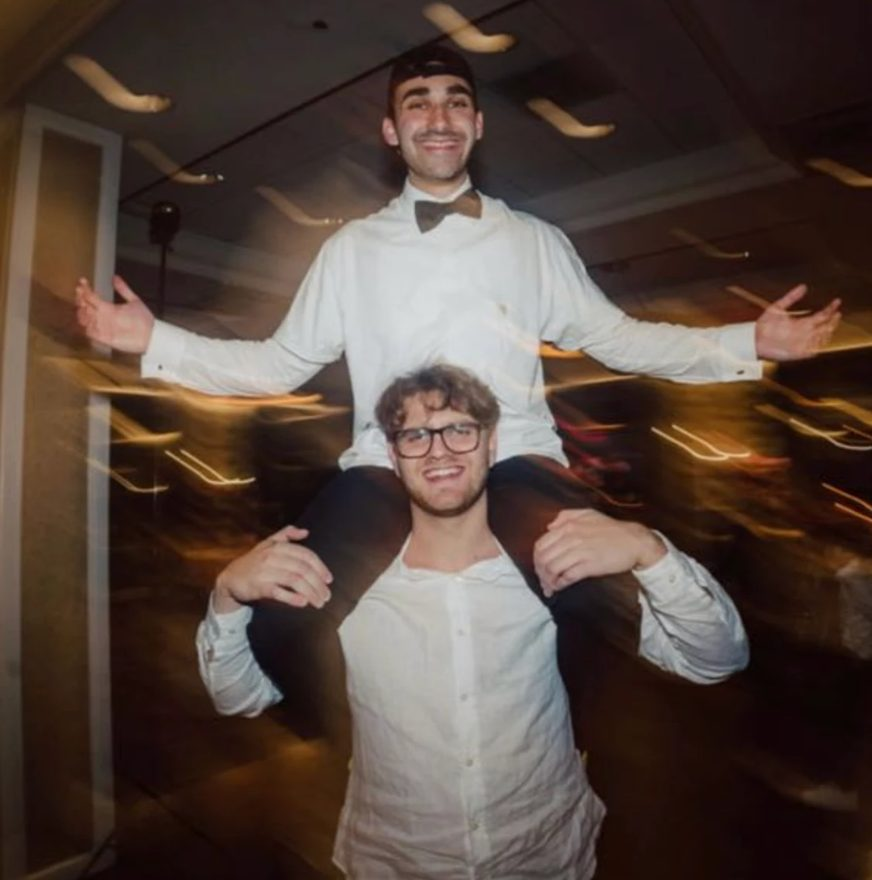

AI is the flood. Rise with it.
Engineers inside your business, shipping the AI that changes how it runs. We don’t leave until you’re ahead.
Engineers inside your business, shipping the AI that changes how it runs. We don’t leave until you’re ahead.
AI will decide which businesses thrive and which drown. We make sure the businesses and institutions of the Jewish world thrive.
Jewish businesses fund our tzedakah, our institutions and our families. We want them on the winning side.

We deployed software at Palantir: Lowe’s supply chain, Army logistics through the Iran war ($18M), and AI transformation at a $10B kidney care company.
Now we’re bringing it home, to the community we know and are trusted in.
Backed by Greywood
Tell us a little about your company and where you are with AI. We'll get back to you.
Thanks. We'll be in touch soon.
We're a small team that moves fast. If you want to build through the storm with us, we'd like to hear from you.
Thanks. We'll read it and get back to you.